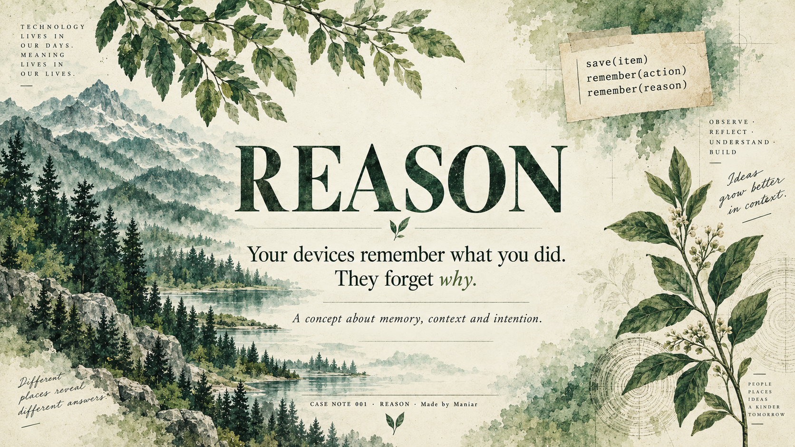
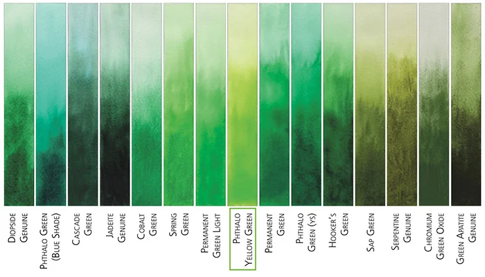

▧
Screenshot
whyCompare before buying
REASON explores a missing layer in everyday digital life: the meaning that once made a screenshot, tab, file, bookmark or saved place worth keeping.
“The content survives. The intention often doesn’t.”

Phthalo, spring, sap, olive and paper.

We built excellent systems for remembering actions. We never gave the same attention to the reasons behind them.
The object is still there. The moment that made it meaningful is gone.
A screenshot can outlive the thought that created it.
You remember the image, but not whether it was for comparison, reference, sharing or later.
A tab can stay open for weeks after its original purpose has disappeared.
The URL survives. The specific question it answered often does not.
The location stays. The plan — birthday, trip, date, friend — gets detached from it.
REASON is not another folder system or notes app. It adds a lightweight “why” beside things we already save.
The behavior should feel nearly invisible: save normally, accept or change a suggested reason, then find it later through meaning.
Save a screenshot, file, link, place or note as you normally would.
Use the current activity to suggest a likely intention — never as a forced label.
Keep context and intention alongside the item, not in a separate organizational burden.
Search like a human remembers: “that thing I saved while comparing desks.”
Intent can reveal more than content. It belongs to the person first.
If preserving a reason feels like paperwork, the idea fails.
The system suggests. The person remains in control.
Old intentions should be closable, just like old tasks.
We taught computers to remember everything we do. We forgot to teach them why we did it.
REASON · Case Note 001 · Made by Maniar